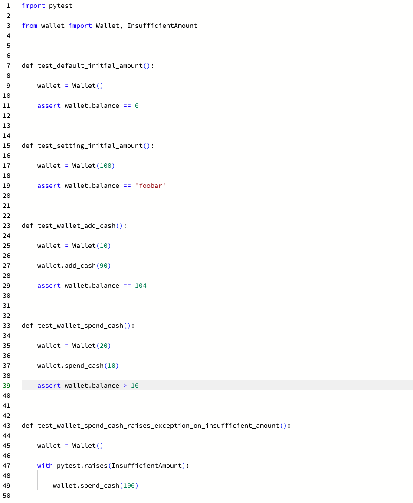
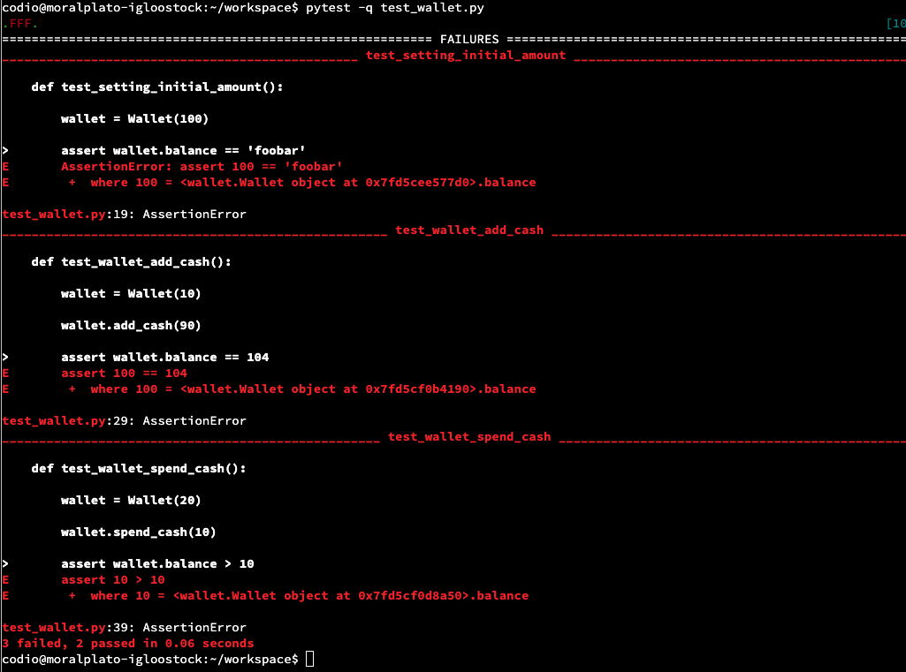

Data Structures Reflection
Assignment brief
Read the articles by Verner et al (2014) and Anton & Nucu (2020). List the main risks they identify and suggest a framework that could be used to capture and categorise the risks
Submission
Changes made to the original file:
Output:
